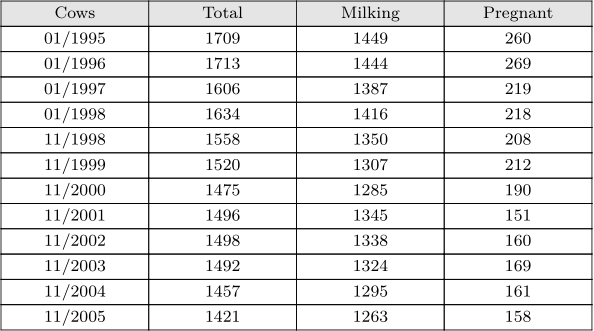

|
TODO: more examples and explanation (See: To-Do List)
|
Inline
-
\setuplayout[scale=0.8]
\usemodule[database]
\defineseparatedlist
[MyTable]
[separator=tab,
left=\bTD,right=\eTD,
first=\bTR,last=\eTR,
before=\bTABLE,after=\eTABLE]
\setupTABLE[c][each][align=flushright,width=2.5cm,align=middle]
\setupTABLE[r][1][background=color,backgroundcolor=gray]
\startMyTable
Cows Total Milking Pregnant
01/1995 1709 1449 260
01/1996 1713 1444 269
01/1997 1606 1387 219
01/1998 1634 1416 218
11/1998 1558 1350 208
11/1999 1520 1307 212
11/2000 1475 1285 190
11/2001 1496 1345 151
11/2002 1498 1338 160
11/2003 1492 1324 169
11/2004 1457 1295 161
11/2005 1421 1263 158
\stopMyTable
-

Data from File
\usemodule[database]
\starttext
\defineseparatedlist
[test]
[separator=space,
before=\bTABLE,after=\eTABLE,
first=\bTR,last=\eTR,
left=\bTD,right=\eTD]
\processdatabasefile[test][csv.csv]
\stoptext
Links